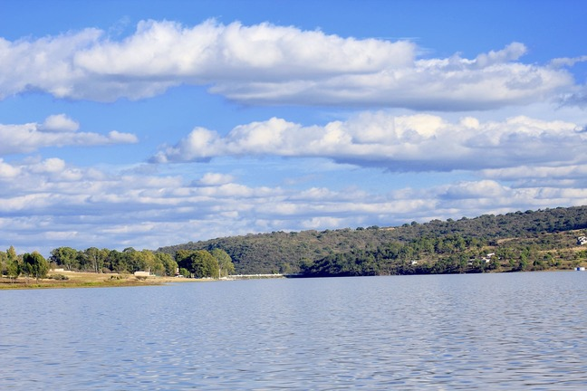

VOLVAMOS LA MIRADA AL CAMPO Y A LA NATURALEZA
Hoy más que nunca necesitamos integrar paisajes sostenibles y productivos
Naturaleza y personas
Nuestra propuesta busca incorporar a las personas en los procesos de conservación integrando a los ecosistemas y a las comunidades a un nivel de paisaje en el cual interactuan de manera sinérgica ecosistemas, personas, comunidades, cultivos, conocimientos, culturas y tradiciones.
